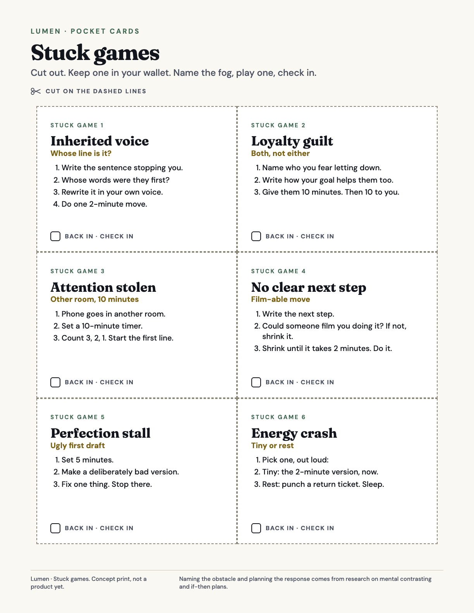

Print · free PDF
Season streak card
Lumen on paper. One season goal on the fridge, 91 check-in boxes, three return tickets. Plus six Stuck game cards for your wallet.



Why it’s built this way
- If-then line. “When ___, I will ___” plans helped people follow through across 94 tests.Gollwitzer & Sheeran, 2006
- Return tickets. In a broken-streak study, people disengaged after a break, less so when they could repair it.Silverman & Barasch, Journal of Consumer Research, 2023
- Only three. A few costly skips beat rigid goals in experiments on “emergency reserves.”Sharif & Shu, Journal of Marketing Research, 2017
- Day 66. The median time to a habit in one study. People ranged from 18 to 254 days; one miss didn’t undo it.Lally et al., European Journal of Social Psychology, 2010
Concept print for friends. Lumen isn’t in stores yet.